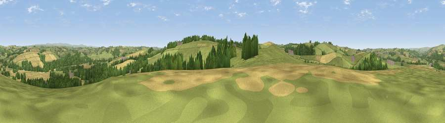

Viewpoint near Atherington
#18669 in England · top 35% of its area beats it · near AtheringtonThe view, rendered

A 360° render of this exact spot computed from the terrain model, tree cover and land cover — summer colours, afternoon light, calibrated against photographs of famous viewpoints. Real trees, hedges and buildings will differ in detail.
The panorama
Grey silhouette: terrain skyline in each direction (720 bearings, Earth curvature and refraction included). Dashed green: skyline with trees (+15 m) and buildings (+8 m) as obstacles. Blue strip: how far the ground is visible on each bearing.
Where the view opens
Wedge length = distance to the farthest visible ground on that bearing (vegetation-aware). Rings at 10, 25 and 50 km.
What fills the view
60% grassland · 22% cropland · 18% woodland ·
Angular shares of the visible panorama (visual magnitude), not map area. Landscape diversity 0.43 (0–1 Shannon).
Key numbers
More beautiful places nearby
The staircase of upgrades: each row has a higher view potential than everything closer. Driving times are estimates from straight-line distance, calibrated against real road routing — check an actual route before setting out.
| Place | Direction | Drive | Score |
|---|---|---|---|
| Viewpoint near Yarnscombe | W · 2 km | ~5 min | 57.4 |
| Viewpoint near High Bickington | SSE · 4 km | ~9 min | 57.7 |
| Viewpoint near Yarnscombe | WSW · 4 km | ~10 min | 61.3 |
| Viewpoint near High Bickington | SE · 5 km | ~11 min | 62.2 |
| Viewpoint near Landkey | N · 6 km | ~12 min | 74.0 |
| Codden Hill | N · 6 km | ~12 min | 81.3 |
| Viewpoint near Parkham | W · 20 km | ~34 min | 81.7 |
| Viewpoint near Croyde | NW · 20 km | ~34 min | 83.7 |
50.99727, -4.01818 · source: screening · position refined by local search. Computed location — check access rights before visiting.